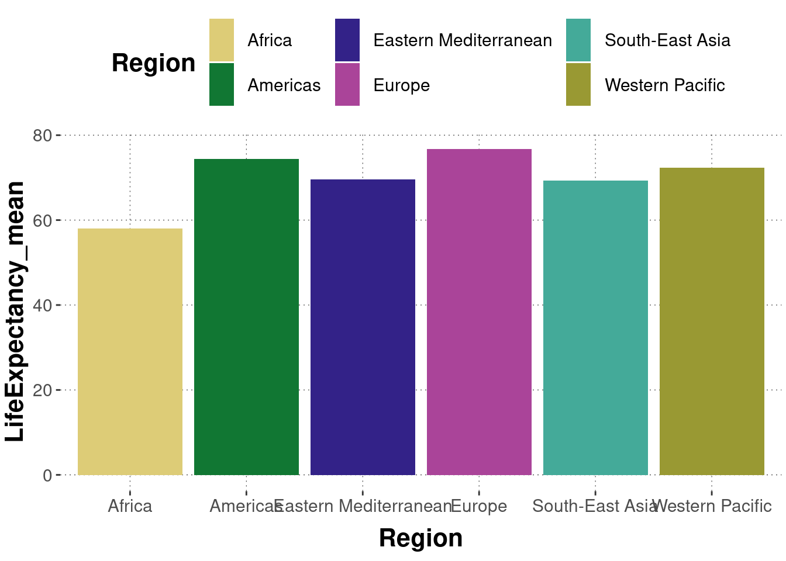

8.1 Probabilistic models in statistics
In its most common natural sense, a “model” is a model of something. It intends to represent something else in a condensed, abstract and more practical form; where what is practical is conditioned by a given purpose. Often the purpose of a model is epistemic, i.e., related to knowledge gain or a deeper understanding of the world: even a model plane arguably serves the epistemic purpose of getting a better idea of what real planes look like; a model of bridge to be constructed helps us imagine how the real thing would turn out to be; this is how models differ from a more ordinary picture or sculpture without such an epistemic purpose. For any given purpose, a good model will try to represent some aspects of reality and abstract away from irrelevant features which might otherwise blur our vision.
A statistical model is a model of (what we imagine to be) a random process \(R\). In most common parlance, however, we often speak of “a model of the data” or of “modeling the data”, but this is only sloppy slang for “a model of (what we assume is) a random process that could generate data of this kind”.
Let \(D\) be (rectangular, tidy) data that represents the kind of data that random process \(R\) is assumed to generate. A model \(M\) for random process \(R\) fixes which variables (columns) of \(D\) are to be modelled as dependent and which are independent variables (and which do not matter at all). Let \(D_{\text{DV}}\) by the subset of \(D\) containing the depedendent variables and \(D_{\text{IV}}\) the subset of \(D\) containing the independent variables.37 We want \(D_{\text{DV}}\) to contain at least one variable. A model with empty \(D_{\text{IV}}\) is fine.
A model \(M\) for data \(D\) also fixes a likelihood function for \(D_\text{DV}\). The likelihood function determines how likely any potential data observation \(D_\text{DV}\) is, given the corresponding observations in \(D_\text{IV}\). Most often, the likelihood function also has free parameters, represented by a parameter vector \(\theta\). The basic (and yet rather uninformative) notation for a likelihood function of model \(M\) for data \(D\) with parameter vector \(\theta\) is therefore:
\[ P_M(D_\text{DV} \mid D_\text{IV}, \theta) \]
Bayesian models have an additional component, namely a prior distribution over parameter values, commonly written as:
\[ P_M(\theta) \].
In sum, let’s adopt the following definition. A statistical model \(M\) for data \(D\) consists of:
- a selection of (disjoint) sets of dependent and independent variables \(D_\text{DV}\) and \(D_\text{IV}\), where the latter is possibly empty, but the former is not; and
- a parameterized likelihood function: \(P_M(D_\text{DV} \mid D_\text{IV}, \theta)\).
A statistical model is a Bayesian model if it also contains:
- a prior distribution: \(P_M(\theta)\).
The Bayesian prior over parameter values can be used to regularize inference and/or to represent any motivated and justifiable a priori assumptions about parameter values that are plausible given our knowledge so far. The next section elaborates on parameters, priors and key differences between frequentist and Bayesian models. But first, we shouldl take a look at two simple examples of models.
8.1.1 Example 1: a single draw from an urn
In front of us is an urn. We cannot see what is inside. We assume (!) that there are \(N = 10\) balls in the urn and that any number \(0 \le k \le 10\) is black, the rest white. Our data is minimal. There is only one variable, which therefore is also our dependent variable. We have drawn a ball from the urn once, and we observed that it is black.
So far, so boring. But what is a reasonable parameterized likelihood function for this case? – Well, we do not know what the content of the urn is but, given our (modelling) assumptions, there are only eleven possible states of the world \(k \in \{0, 1, \dots, 10\}\). If we assume (as part of the model structure) that the total number of balls \(N\) in the urn is known \(N = 10\), then the number \(k\) of black balls in the urn straightforwardly entails the likelihood of the data:
\[ P_M(D = \text{"black"} \mid k) = \frac{k}{N}\]
It is important to realize that this (and any other likelihood function) defines the probability, not only of the observed data, but for the whole class of observerable data, including observations that are only logically conceivable, but possibly ruled out by the model.
The model of the single-draw random process has a single free parameter \(k\), which feeds into the likelihood function. We naturally think of the likelihood of the data as probabilistically dependent on the parameter value \(k\).
A Bayesian model of this situation would additionally also include a prior over parameter values. There are only eleven possible values for \(k\), so this is a discrete probability distribution. If we do not have any relevant a priori knowledge of the process, we might want to assign the same probability to each value of \(k\):
\[ P_M(k = i) = \frac{1}{11} \text{; for all } \ i \in \{0, 1, \dots, 10\} \]
8.1.2 Example 2: avocado prices by type

We must also consider a slightly less minimalistic example. The avocado data set is useful for that. As before, we load the data into a variable named avocado_data and do some minor data wrangling (see also Appendix Chapter D.6):
avocado_data <- read_csv(url('https://raw.githubusercontent.com/michael-franke/intro-data-analysis/master/data_sets/avocado.csv')) %>%
# remove currently irrelevant columns
select( -X1 , - contains("Bags"), - year, - region) %>%
# rename variables of interest for convenience
rename(
total_volume_sold = `Total Volume`,
average_price = `AveragePrice`,
small = '4046',
medium = '4225',
large = '4770',
)We are interested in the random process that generates avocado prices. The data relevant for modeling this random process contains average_price as the dependent variable and type as the independent variable. We could also say that we are interested in predicting / explaining the average prices in terms of the avocado type.To get a feeling for how the data to be modeled looks like, here are histograms for the price data for conventionally and organically grown avocados:
avocado_data %>%
ggplot(aes(x = average_price, fill = type)) +
geom_histogram(binwidth = 0.01) +
facet_wrap(type ~ ., ncol = 1) +
ylab('') +
xlab('Average price') +
theme(legend.position = "none")
Our model assumes that the data observations in average_price are samples from a normal distribution, whose mean \(\mu\) and standard deviation \(\sigma\) are free parameters, one pair of \(\mu\) and \(\sigma\) for each type of avocado. So, this model has four free parameters, which constitute the parameter vector \(\theta = \langle \mu_c, \sigma_c, \mu_o, \sigma_o \rangle\). As for the likelihood function, if \(\vec{y}\) is the vector average_price, so that \(y_i \in \mathbb{R}^+\) is the average price observed in row \(i\), and if \(\vec{x}\) is an indicator variable such that \(x_i \in \{ 1, 0\}\) is the entry for the type of avocado in line \(i\) where 1 represents conventionally grown and 0 represents organically grown, and if there are \(k\) rows in the data set, the likelihood function can be written as:
\[ P_M(\vec{y} \mid \vec{x}, \theta) = \prod_{i = 1}^k x_i \ \text{Normal}(y_i, \mu_c, \sigma_c) \ + \ (1- x_i) \ \text{Normal}(y_i, \mu_o, \sigma_o) \]
If we aspire to handle a Bayesian model, we need to supply a prior for parameters \(\theta\) as well. General strategies of fixing priors for Bayesian data analysis are discussed in the next subsection. To give a concrete example for this case, we could assume that all parameter vectors are independent of each other and assume that the means \(\mu_c\) and \(\mu_o\) are themselves normally distributed. We could use a truncated normal distribution38 as the priors for the standard deviations \(\sigma_c\) and \(\sigma_o\):
\[ \begin{aligned} P(\mu_c, \sigma_c, \mu_o, \sigma_o) & = P(\mu_c) \ P(\sigma_c) \ P(\mu_o) \ P(\sigma_o), \text{ where} \\ P(\mu_c) & = \text{Normal}(\mu_c, \mu = 1.5, \sigma = 0.25) \\ P(\mu_o) & = \text{Normal}(\mu_o, \mu = 1.5, \sigma = 0.25) \\ P(\sigma_c) &= \text{Trunc-Normal}(\sigma_c, \mu = 0.2, \sigma = 0.05, \text{lower} = 0) \\ P(\sigma_o) &= \text{Trunc-Normal}(\sigma_o, \mu = 0.25, \sigma = 0.1, \text{lower} = 0) \end{aligned} \]
Naturally, \(D_{\text{DV}}\) and \(D_{\text{IV}}\) are disjoint: it makes no sense to predict or explain \(x\) based on an observation of \(x\).↩